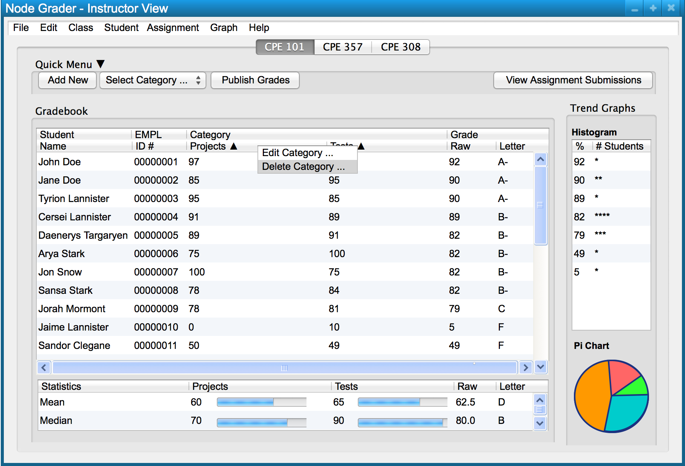

In order to delete a category, a user right clicks the category to be deleted and is presented with the menu shown in Figure 1.

Figure 1: Right clicking a category.
Figure 2: Delete category dialog.
The user is presented with a prompt to verify that they want to delete the category.